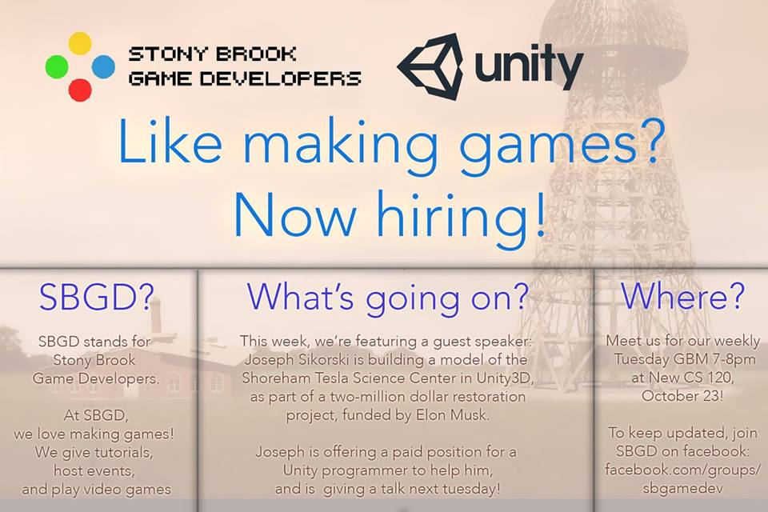
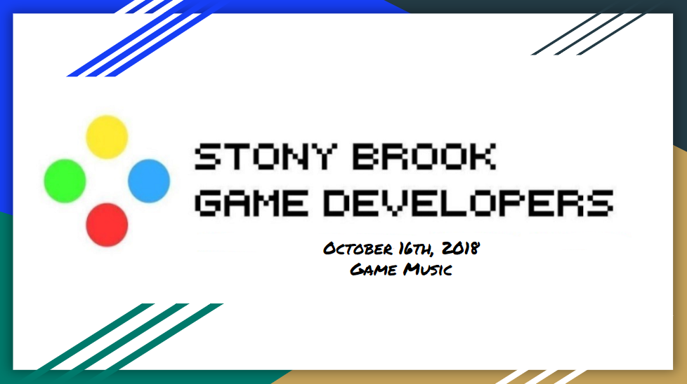
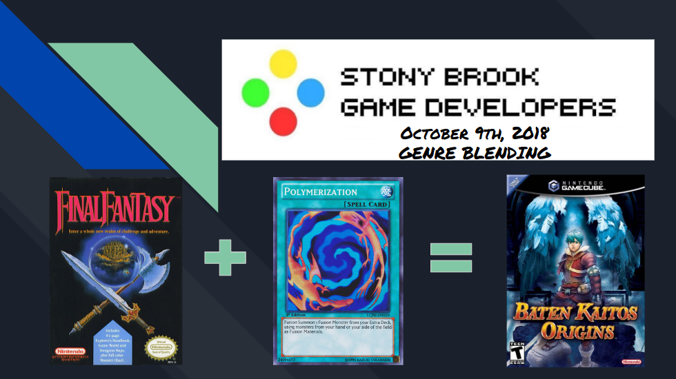
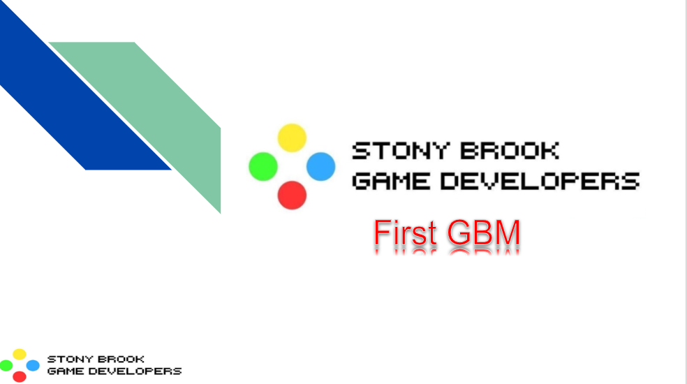

Timeline
2018

Joseph Sikorski, a worker at the Tesla Science Center at Shoreham, who is working on an online game and simulation of the Tesla center using the Unity3D program, visits to do a demonstration of his project. The project's purpose was to aid in a 2 million dollar restoration of a building funded by Elon Musk. Joseph showcased a well detailed and visually appealing model of the Tesla Science Center as well as basic gameplay mechanics such as picking up and using items found in the game as well as some of the game objectives. He discussed that he needed programmers who are familiar with Unity to help him make his project run more efficiently. He would be offering paid positions for programmers to improve his project and to add features to it. Afterwards, Joseph spoke about his time in the game industry, how he got into it, how he was accepted by the Tesla Science Center, then he accepted resumes from students with Unity3D experience.

Hosted by Veronica Quintana, Veronica discusses the history of music making in video games, specifically the limited technology video games had with music making in the 1980's and how that technology has went from being limited to four sound channels, two of which are bass and percussion and chiptune to being made up of more channels and live music. She discussed what types of music goes with certain genres and the importance of music in both establishing story themes and long lasting impressions on players. Veronica delineated that music signifies different aspects of a story such as by highlighting specific story moments through recurring music themes, by setting tone and mood to tell a story and by setting atomsphere during gameplay. Finally, she discussed how music can be the gameplay itself in genres such as rhythm games and how music can be used as a teaching tool to signify important gameplay moments such as a change in a boss's fighting patterns after you damage it a certain amount or a solving of a part of a puzzle.

Hosted by Peter Ly, Peter discusses how certain genres can be blended to create new gameplay mechanics and to attract fans of both genres. Peter introduced games that are merges of genres such as Puyo Puyo Tetris, which is a tile matching puzzle game like Tetris and a match-three game like Candy Crush, that combines thse aspects that make them fun to make a faster paced game. He also introduced Super Smash Bros, which merges 2D platforming and 2D fighting to make a frantic, fast-paced fighting game that utilizes complex environments. Peter delineated that a way to merge genres is by combining contrasting gameplay elements to highlight the strengths of each genre merged. He used the game Kirby Air Ride, a racing game as an example that merged the aspects of collecting games with aspects of racing games to make an interesting multiplayer game with many possibilities. Finally, Peter discussed that genres could be merged based on their similarities. Strategy games like chess could be merged with the character customization of RPGs to create a more complex game like Tactics Arena Online and fast paced action games could be merged with the puzzles of adventure games to create high flying games of wide scope like the Uncharted series.

In the semester's first GBM, president Peter Ly and former president Sammy Lui introduce the current E-board to the club. Afterwards, the club introduced themselves, their fields of study, their video game interests as well as any game making skills them have. Peter and Sammy introduced game projects that previous E-board members had made, including games that had been included in Stony Brook's annual Game Programming Competition as well discussed new events the club would be having such as having guest speakers from the video game industry come to showcase their games and discuss their time in the industry and having an upcoming game jam, a game making competition the club would be hosting. Afterwards, Peter and Sammy announced the opening of the vice president, secretary and public relations positions on the E-board for the E-board election they would be hosting the following week as well as requirements and criteria for each position such as committing 2 to 3 hours per week to the club.

3/3